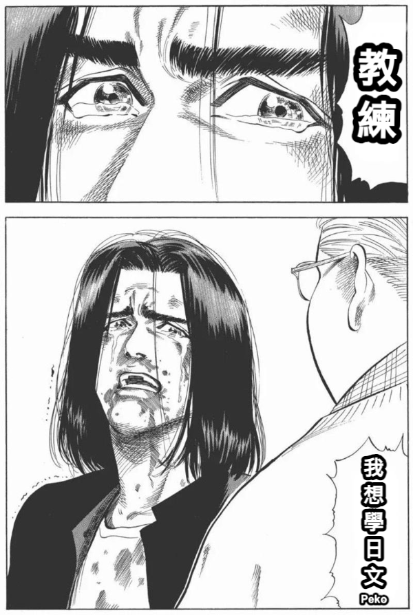

[日本語勉強中] 01 國籍
個人日文筆記 - 第一課 - 學習國籍的講法

因為看 VTuber 的關係，原本已經熄滅的日文學習動機又被燃起
原本看 JP 組是等烤肉，因為主要看 EN 所以也沒什麼影響。但是當其他組和 JP 開始連動
他們的對話就變成以日文為主！所以教練，我想學日文！
當初因為工作關係打算先著重在英文技能上，但是發現這樣沒有能和程式切分開來的興趣
這種心態不太健康，所以打算把日文結合休閒興趣來學習！

五十音說實在也沒什麼技巧，自己去發掘適合自己的方式
也不用背到很熟，大概有個印象之後就直接進入教材。不斷重複看久了就會印象深刻！
文法
1.日語詞彙種類
日語詞彙主要可以分為三大類：
| 詞彙種類 | 說明 | 舉例 |
|---|---|---|
| 和語詞 | 是日本人自創的詞彙，有自己獨特的發音 基本上都有漢字的形式 |
私 （わたし/watashi/我） |
| 漢字詞 | 是來自於古漢語的詞彙，形式像漢語 發音很類似 |
中国人 （ちゅうごくじん/chuugokujin /中國人） |
| 外來詞 | 是來自於歐美國家的詞彙，發音很類似 用片假名表示 |
アメリカ （あめりか/amerika/美國） |
2.N1 は N2 です。
這是日語中的判斷句，N2 是對 N1 的判斷和說明，表示N1 是 N2
| 日語 | 翻譯 |
|---|---|
| watashi wa nihonjin desu 私は日本人です。 |
我是日本人 |
| watashi wa amerikajin desu 私はアメリカ人です。 |
我是美國人 |
-
は（ha）是助詞，作用是提示主題，即表示該句是圍繞
は前面的名詞展開的
は的讀音需要特別注意，它本來讀作ha，但當其作為「助詞」時，讀音為wa -
です（desu）是本句的謂語部分，是日語中判斷句的結尾方式
它表示對主題部分（N1は）的判斷和說明，相當於「是」
3.N1 は N2 ではありません。
這是「N1 は N2 です」的否定形式，表示N1 不是 N2
ではありません(dewaarimasen) 是 です的否定形式，表示不是，其中は也讀作wa
這個結構也可以說成じゃありません（jaarimasen），更加口語化。
| 日語 | 翻譯 |
|---|---|
| watashi wa nihonjin dewaarimasen 私は日本人ではありません。 |
我不是日本人 |
| watashi waamerikajin dewaarimasen 私はアメリカ人じゃありません。 |
我不是美國人 |
4.謂語的位置
就像 です（是） 和 ではありません（不是） 放在句尾一樣
日語中的謂語一般放在「句尾」的位置上，日語句子的一般語序為主 + 賓 + 謂
| 主語 | 賓語 | 謂語 |
|---|---|---|
| watashi wa 私は |
nihongo o 日本語を |
benkyou shimasu 勉強します |
| 我 | 日文 | 學習 |
5.日語中的助詞
助詞是日語句子的重要組成部分，用於連接兩種語詞，確立它們之間的關係，或是添加詞語的意義
它起到將單詞連接成句的作用，只靠單詞不能形成一句完整的話
基本上每個詞的後面都需要加上相應的助詞，才能表達句子的某個成分
比如在「私は日本語を勉強します」這句中：
- 「私は」表示主語
- 「日本語を」表示賓語
本課單字
| 日文 | 發音 | 翻譯 |
|---|---|---|
| アメリカ人 | amerikajin あめりかじん |
美國人 |
| イギリス人 | igirisujin いぎりすじん |
英國人 |
| 日本人 | nihonjin にほんじん |
日本人 |
| 韓国人 | kangokujin かんこくじん |
韓國人 |